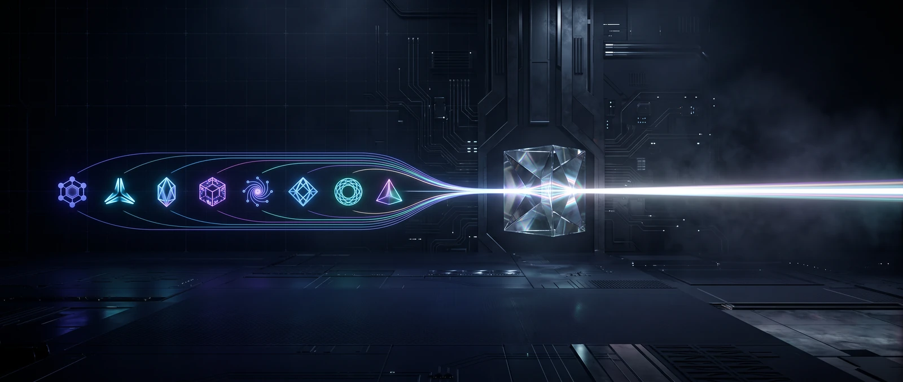

Adversarial-review is a folder of zero-dependency Python that any coding agent can operate. The pipeline is identical everywhere — deterministic gates, an independent multi-model panel, and a PASS / FAIL / BLOCKED verdict computed by a script, never narrated by a model. Only two things change per platform: how you point the agent at it, and which model family you exclude.

one pipeline · every platformA model that reviews its own work is the fox auditing the henhouse. So correctness comes from deterministic tools with exit codes and from reviewer models whose provider families did not write the change — and the decision is computed from the recorded artifacts by aggregate.py, which you cannot argue with.
Match --dev-providers to whoever authored the change on your platform. Get this wrong and the author quietly grades its own work — the single mistake that turns the whole thing into theatre.
--dev-providers anthropic,openai. When in doubt, over-exclude — too few independent families comes back BLOCKED on purpose, never a soft pass. The panel is then drawn only from the families that did not write it.
If your agent reads AGENTS.md, you are already 90% set up. Everything below drives the exact same pipeline.
Skills are first-class. Drop the one folder into your skills directory and invoke it; the agent reads SKILL.md and runs the pipeline for you.
Codex, Cursor, Windsurf/Devin, Copilot, Gemini CLI, Aider, Zed, Warp, goose — and 60k+ repos' agents. Add a short release-gate block that tells the agent to run the review before it calls a change "done."
Any MCP host. Run ar-mcp with the repo under review as the working directory; the host drives the review through MCP tools. Stdlib-only, and deliberately not an arbitrary-command surface.
Wire the verdict's exit code into CI so it gates the merge, not a human's optimism.
Same verdict everywhere; the wiring and the excluded family change. Each card: when to reach for it, and the one thing to watch.
The reference experience. Gate a branch you and Claude just built before the PR — Cowork additionally hands a stakeholder a readable verdict.md + attested run directory, not just a green check.
AGENTS.md-native. Gate a Codex-built change before merge; the most common miss is forgetting to exclude openai — then GPT reviews GPT.
Now Devin Desktop; the Cascade agent reads AGENTS.md and runs commands, so it can gate its own autonomous work before opening a PR. The highest-leverage case.
Model-agnostic IDE. Exclude whatever model you selected — easy to get wrong because you can switch models mid-session.
PR-native. Let the Action compute the verdict in CI rather than trusting the agent's prose summary of its own change.
AGENTS.md-native. Exclude Gemini, keep the panel diverse, gate on the exit code.
Aider, Zed, Warp, goose, or open-weight (Hermes/Nous, Llama, Qwen). Reads AGENTS.md → path B; otherwise paste SKILL.md as instructions. Open models are also useful on the panel for provider diversity.
A computed verdict, not a vibe. PASS / FAIL / BLOCKED from recorded artifacts, relayed verbatim.
Real findings from models that didn't write the code — and, when high/critical findings exist, a rebuttal round where reviewers confront each other with evidence.
BLOCKED when review is incomplete. Unknown is treated as unshippable, so a half-run never reads as confidence.
A tamper-evident audit trail. Coverage + attestation in every verdict.json, verifiable with --check-digest.
A few cents of reviewer tokens per run — it reports usage. Not a replacement for your scanners; the layer that makes their results and an independent review converge into one honest verdict.
Never let the authoring family review itself. Setting --dev-providers correctly is 90% of the value.
The operator is a conflicted party. Safe only because the verdict is computed by aggregate.py, not narrated by the model. Don't let an agent interpret a FAIL into a pass.
Transport privacy. An MCP transport routes your code through that provider — fine for NORMAL, confirm before SENSITIVE/CRITICAL. Never put secrets or .env in context.md.
Feed it the diff, not the repo. main...HEAD plus the surrounding code that matters — not a 200-file dump.
Don't move the goalposts. Weakening a gate to get a pass defeats the point — and the aggregator resists it; waivers must be on the record with a named authorizer.
That claim is precisely what this exists to verify. Wire the verdict into a pre-push hook or a required check — a verdict nobody enforces is a comment.